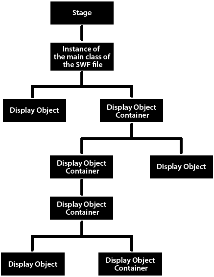
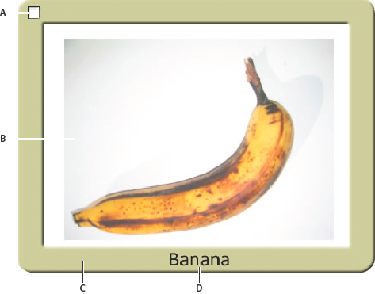

Basics of display programming
Each application built with OpenFL has a hierarchy of displayed objects known as the display list, illustrated below. The display list contains all the visible elements in the application.

As the illustration shows, display elements fall into one or more of the following groups:
The Stage
The Stage is the base container of display objects. Each application has one Stage object, which contains all on-screen display objects. The Stage is the top-level container and is at the top of the display list hierarchy:
Each project has an associated Haxe class, known as the main class of the project. When a project opens, OpenFL calls the constructor function for that class and the instance that is created (which is always a type of display object) is added as a child of the Stage object. The main class of a project always extends the Sprite class (for more information, see Advantages of the display list approach.
You can access the Stage through the
stageproperty of any DisplayObject instance. For more information, see Setting Stage properties.Display objects
In Haxe, all elements that appear on screen in an application are types of display objects. The openfl.display package includes a DisplayObject class, which is a base class extended by a number of other classes. These different classes represent different types of display objects, such as vector shapes, movie clips, and text fields, to name a few. For an overview of these classes, see Advantages of the display list approach.
Display object containers
Display object containers are special types of display objects that, in addition to having their own visual representation, can also contain child objects that are also display objects.
The DisplayObjectContainer class is a subclass of the DisplayObject class. A DisplayObjectContainer object can contain multiple display objects in its childlist. For example, the following illustration shows a type of DisplayObjectContainer object known as a Sprite that contains various display objects:

A. A SimpleButton object. This type of display object has different "up," "down," and "over" states. B. A Bitmap object. In this case, the Bitmap object was loaded from an external JPEG through a Loader object. C. A Shape object. The "picture frame" contains a rounded rectangle that is drawn in Haxe. This Shape object has a Drop Shadow filter applied to it. D. A TextField object.
In the context of discussing display objects, DisplayObjectContainer objects are also known as display object containers or simply containers. As noted earlier, the Stage is a display object container.
Although all visible display objects inherit from the DisplayObject class, the type of each is of a specific subclass of DisplayObject class. For example, there is a constructor function for the Shape class or the Video class, but there is no constructor function for the DisplayObject class.
Important concepts and terms
The following reference list contains important terms that you will encounter when programming OpenFL graphics:
Alpha The color value representing the amount of transparency (or more correctly, the amount of opacity) in a color. For example, a color with an alpha channel value of 60% only shows 60% of its full strength, and is 40% transparent.
Bitmap graphic A graphic that is defined in the computer as a grid (rows and columns) of colored pixels. Commonly bitmap graphics include digital photos and similar images.
Blending mode A specification of how the contents of two overlapping images should interact. Commonly an opaque image on top of another image simply blocks the image underneath so that it isn’t visible at all; however, different blending modes cause the colors of the images to blend together in different ways so the resulting content is some combination of the two images.
Display list The hierarchy of display objects that will be rendered as visible screen content by OpenFL. The Stage is the root of the display list, and all the display objects that are attached to the Stage or one of its children form the display list (even if the object isn’t actually rendered, for example if it’s outside the boundaries of the Stage).
Display object An object which represents some type of visual content in OpenFL. Only display objects can be included in the display list, and all display object classes are subclasses of the DisplayObject class.
Display object container A special type of display object which can contain child display objects in addition to (generally) having its own visual representation.
Main class of the project The class that defines the behavior for the outermost display object in a project, which conceptually is the class for the project itself. This is the entry point for each project.
Masking A technique of hiding from view certain parts of an image (or conversely, only allowing certain parts of an image to display). The portions of the mask image become transparent, so content underneath shows through. The term is related to painter’s masking tape that is used to prevent paint from being applied to certain areas.
Stage The visual container that is the base or background of all visual content in a SWF.
Transformation An adjustment to a visual characteristic of a graphic, such as rotating the object, altering its scale, skewing or distorting its shape, or altering its color.
Vector graphic A graphic that is defined in the computer as lines and shapes drawn with particular characteristics (such as thickness, length, size, angle, and position).